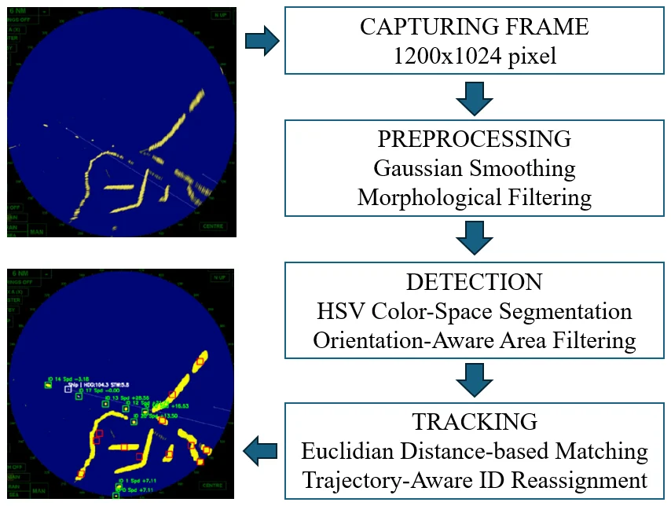
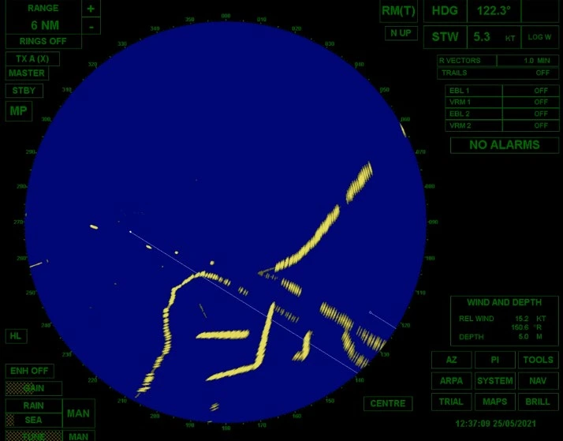
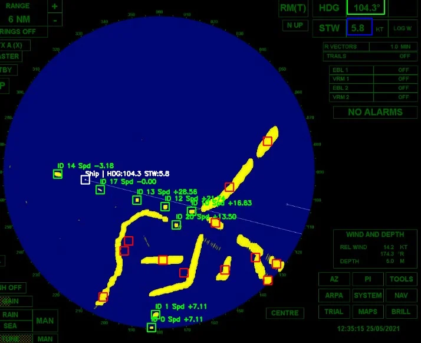
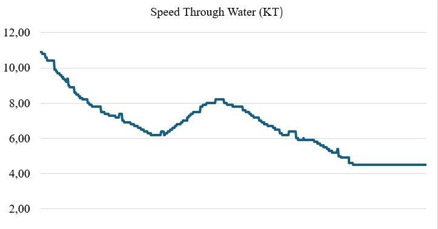
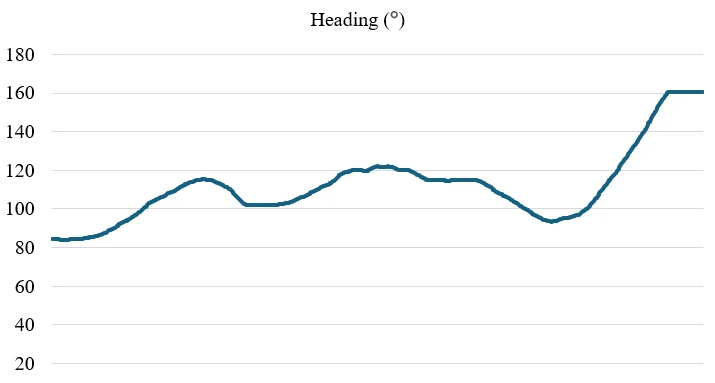

A lightweight, interpretable pipeline that reads a commercial radar screen, finds targets by colour, keeps their identities through gaps and manoeuvres, and tells whether each one is approaching or moving away, all on a CPU.
HSV segmentation of yellow echoes and the white own-ship marker, with dual blur / sharpen preprocessing.
Track
Euclidean association plus a "lost targets" buffer that re-attaches IDs at the predicted position.
Understand
Ship-relative velocity, smoothed, to label contacts as approaching, receding or holding distance.
1 · Introduction
Why Radar, and What Goes Wrong
Autonomous surface vehicles need reliable, real-time awareness of nearby objects. Radar keeps working in darkness, fog and storms where cameras fail, but radar images are low-resolution, noisy and colour-encoded.
Static area thresholds: an echo's area changes with aspect angle, distance, waves and nearby ships, so true targets get discarded.
Fragile identities: a target hidden for a few frames, or a sharp manoeuvre, produces a new ID and breaks the track.
Deep trackers need data and GPUs; many ASV platforms have neither.
Contributions
Orientation-aware area filtering with trajectory context
Motion-predictive ID recovery from a lost-targets buffer
Ship-relative velocity estimation
A modular, configurable, CPU-only implementation
2 · Materials and Methods · Fig. 1
The Framework

Python with OpenCV, NumPy and mss for screen capture. All thresholds live in a configuration file, so the same code adapts to other screen resolutions, colour schemes and conditions without code changes.
2 · Materials and Methods · Fig. 5
Data and Dual-Mode Preprocessing

Raw radar screen (Fig. 5)
Wärtsilä NTPro 5000 bridge simulator, Simulation Center of the Fatsa Faculty of Marine Sciences, Ordu University.
Two hours of BridgeMaster radar screen at 1200 × 1024; 7,200 frames evaluated.
Screen capture gives BGRA; the alpha channel is dropped.
Large structures
Gaussian blur stabilizes coastlines and big echoes against sweep lines and edge noise.
Small targets
Laplacian / unsharp sharpening keeps buoys and small, fast vessels from being smoothed away.
2 · Materials and Methods · Fig. 2, Table 1
HSV Detection and Area Classes
Threshold yellow echoes in HSV on both the blurred and the sharpened frame; take the union.
Morphological open (remove specks) then close (bridge gaps).
Contours → area and centroid from image moments:
Mij = Σ xi yj I(x, y), A = M00, x̄ = M10/M00, ȳ = M01/M00
The own ship is the single white object (high V, low S); its centre history feeds the velocity module.
Parameter
Value
Unit
target_hsv_min
[10, 50, 50]
H 0–180, S, V
target_hsv_max
[40, 255, 255]
H 0–180, S, V
target_area
32 – 196
px²
landmass_area
196 – 10,240
px²
fixed_area
1 – 32
px²
distance_threshold
10
px
max_lost_frames
5
frames
speed_multiplier
23.47
kn · s / px
2 · Materials and Methods · Interactive
Detection Lab: Colour and Area on a Real Screen
Show
Runs in your browser: blur → HSV threshold → open / close → connected components → class by area. Area alone mislabels some echoes (fragments of coastline look like small targets); that is exactly what the orientation and velocity checks on the next slides address.
2 · Materials and Methods · Eq. (5)
Orientation-Aware Area Filtering
Area-only rule
keep a contour only if 32 ≤ A ≤ 196 px²
a target seen at a narrow angle shrinks below 32 px² and is lost
With motion context
predict where each tracked target should be
keep a small contour if its centroid lies on that trajectory
x̂t+1 = xt + vx · Δt, ŷt+1 = yt + vy · Δt
Direction comes from the centroid history over several frames (a deque per target), not from one frame, so a momentary change in echo size does not erase a consistent track.
2 · Materials and Methods · Fig. 3, Eq. (4)
Tracking with ID Recovery
1. Associate. Each detection goes to the nearest active track if d = √((x₂ − x₁)² + (y₂ − y₁)²) < 10 px; history, velocity and area range are updated and the age resets.
2. Age. A track that is not matched ages by one frame; after max_lost_frames = 5 it leaves the active list.
3. Keep, don't delete. Lost tracks move to an inactive buffer with their last position and velocity.
4. Recover. An unmatched detection is checked against each inactive track's predicted position (last position + velocity × elapsed time). If it is close, the old ID is reassigned; only otherwise is a new ID created.
2 · Materials and Methods · Interactive
Tracker Simulator: Baseline vs ID Recovery
Distance
Max lost
Hidden for
Synthetic scene, not paper data: four targets; one straight-moving and one turning target disappear for the chosen number of frames, plus 3% random misses. Colours are track IDs; a change of colour is an ID switch. Long gaps on the turning target defeat straight-line prediction too.
2 · Materials and Methods · Fig. 4, Eqs. (6)–(7)
Relative Velocity: Approaching or Moving Away?
Own speed
Own course
Target speed
Target course
Bearing
vrel = vtarget − vship
White: own ship · yellow: target velocity · red: relative velocity. In the system, velocities come from centroid displacements; speed_multiplier converts px/s to knots.
2 · Materials and Methods · Eq. (8)
Smoothing a Jittery Speed Estimate
v̄t = α · vt + (1 − α) · v̄t−1
Smoothing
raw relative speedsmoothed
Pixel jitter of the own-ship marker and segmentation noise make the raw speed jump. A small α follows the trend calmly but reacts later; α = 1 is no smoothing at all. Synthetic series for illustration.
3 · Results · Figs. 6–8
The Two-Hour Scenario

Live output: IDs and relative speeds (Fig. 6)


Own-ship speed through water (Fig. 7) and heading (Fig. 8): speed changes and turns that stress tracking.
3 · Results · Tables 2 and 4
Detection Accuracy
Objects
Targets: area + heading
TPR 94.5% → 98.7%, FPR 2.7% → 1.1% (−59%). Ground truth: system output exported to labelImg, then checked by hand.
Fixed objects: area + relative velocity
TPR 85.3% → 92.2%, FPR 6.8% → 3.5%: velocity separates buoys from small moving targets of similar size.
3 · Results · Table 3
Tracking Continuity
ID switches112 → 28positional-only → proposed (−75%)
Switches happen when a target is lost and comes back with a new ID: abrupt trajectory changes, close interactions, or speeds beyond the 10 px matching radius.
Using speed and direction to predict where a lost target should reappear keeps its original ID.
The matching threshold should match the expected motion profile: fast targets need a larger radius.
3 · Results · Table 5
Real-Time Performance on a CPU
Per frame240 ± 17 ms≈ 4 FPS
CPU10.6 ± 2.1%min 6.8%, max 15.7%
Memory111 ± 1.9 MB105.7–113.4 MB
HardwareNo GPU6th-gen Intel, 16 GB
Fast enough
A marine radar completes a 360° scan every 2–3 s, so ~4 FPS processing keeps up with every new picture.
Bounded memory
Fixed-size deques keep only recent positions: constant-time updates and flat memory over long runs.
4 · Discussion
Discussion and Limitations
Classical vision is enough here
Colour-encoded displays let simple HSV segmentation and centroid tracking reach high accuracy without training data or GPUs.
Context beats fixed rules
Trajectory and velocity context rescue targets that a fixed area rule would drop.
Limits
Manually tuned HSV thresholds and area limits; simulator data; overlapping targets can still swap IDs.
Next
Adaptive thresholds (histogram-based, k-means, learned), validation on real radar data, sensor fusion with cameras.
5 · Conclusions
Conclusion
A modular, real-time radar-image framework for ASVs: HSV detection, orientation-aware filtering, motion-predicted ID reassignment and relative velocity.
98.7% true positives with 1.1% false positives over 7,200 frames.
ID switches down 75% and generated IDs down 58% against a positional-only tracker.
240 ms per frame on a CPU with ~11% load: suitable for resource-constrained embedded platforms.
5 · Conclusions
Check Questions
Why does HSV segmentation work well on commercial radar screens?
Why can a fixed area threshold discard a real target?
A target is hidden for 14 frames while moving 2 px per frame. Why does a positional-only tracker give it a new ID?
How does the system decide whether a contact is approaching?
Is 4 FPS enough for marine radar? Why?
Show answers
Targets are drawn in fixed colours (yellow echoes, white own ship); hue separates them from intensity changes.
Echo area varies with aspect angle, range, waves and reflections; a narrow-angle echo can fall below the minimum.
After more than 5 lost frames (max_lost_frames) the track is removed, and the target reappears ~28 px away, outside the 10 px radius. Prediction from its velocity puts the search window where it actually is.
From the relative velocity (target minus own-ship velocity): if it points toward the own ship, the range is shrinking.
Yes: a full radar scan takes 2–3 s, so a new picture arrives slower than the system processes frames.
References
Selected References
Kristan, M., Kenk, V.S., Kovačič, S., Perš, J. (2015). Fast image-based obstacle detection from unmanned surface vehicles. IEEE Transactions on Cybernetics, 46(3): 641–654.
Kim, H., Kim, D., Lee, S.M. (2023). Marine object segmentation and tracking by learning marine radar images for autonomous surface vehicles. IEEE Sensors Journal, 23(9): 10062–10070.
Kim, K., Kim, J., Kim, J. (2021). Robust data association for multi-object detection in maritime environments using camera and radar measurements. IEEE Robotics and Automation Letters, 6(3): 5865–5872.
Stroescu, A., Daniel, L., Gashinova, M. (2020). Combined object detection and tracking on high resolution radar imagery for autonomous driving using deep neural networks and particle filters. IEEE Radar Conference.
See the full article for the complete reference list. Figures are reproduced from the article.
Thank You
Radar Image-Based Object Detection and Tracking for Autonomous Surface Vehicles
How to cite: Külcü, S. (2026). Radar image-based object detection and tracking for autonomous surface vehicles. Turkish Journal of Maritime and Marine Sciences, 12(1), 35–47. doi:10.52998/trjmms.1743670